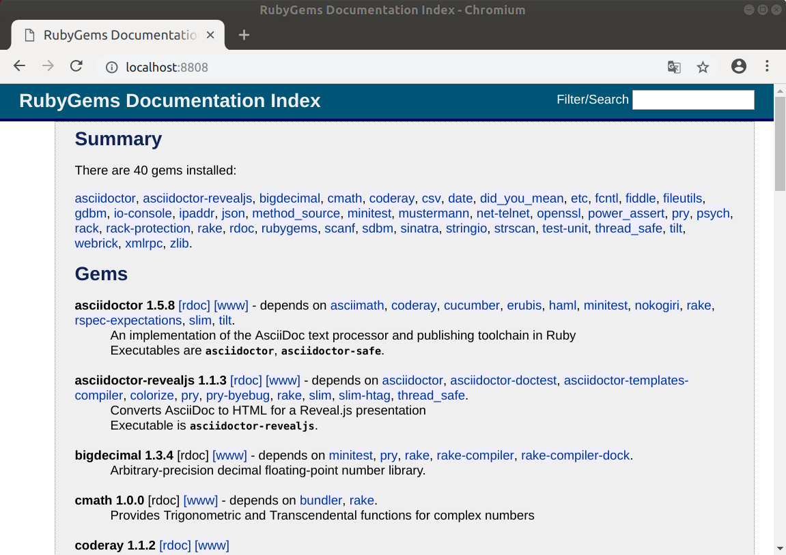

Version 5.2.1 · März 2019
Abstract
Ruby ist eine dynamische, freie Programmiersprache, die sich einfach anwenden und produktiv einsetzen lässt.
Dieser Artikel ist eine Schritt-für-Schritt Anleitung zur Installation
von Ruby MRI 2.5 aus dem QuellCode.
MRI steht für Matz-Ruby-Installation.
Die Programmiersprache Ruby ist die Grundlage für das Framework Ruby on Rails.
Ruby ist Open Source, wird mit Subversion auf ruby-lang.org entwickelt (mit Spiegelung auf GitHub) und ist freigegeben unter der 2-clause BSD license.
Der Artikel ist in AsciiDoc geschrieben und mit Asciidoctor 1.5.8 erstellt worden.
|
|
Zu beachten ist, dass so ein Dokument zum Einen nie abschliessend sein kann, und zum Anderen bestimmte Konfigurationen anders, oder auf einem anderem Weg durchgeführt werden können. Gerne nehme ich Verbesserungsvorschläge entgegen. Es gilt wie immer: Verwendung der Anleitung auf eigene Gefahr. |
Vorraussetzung
Die Installation wird für Ubuntu 18.04 LTS (Bionic Beaver) beschrieben.
Gleichwohl sind die einzelnen Schritte auch für
andere Debian-basierte GNU/Linux Distributionen übertragbar.
Die System-Installation von Ruby ist, wie in IiU — Asciidoctor beschrieben, durchgeführt worden.
$ COLUMNS=96 dpkg --list | grep ruby2.5ii libruby2.5:amd64 2.5.1-1ubuntu1 amd64 Libraries necessary to run Ruby 2.5 ii ruby2.5 2.5.1-1ubuntu1 amd64 Interpreter of object-oriented scripting ii ruby2.5-dev:amd64 2.5.1-1ubuntu1 amd64 Header files for compiling extension modu ii ruby2.5-doc 2.5.1-1ubuntu1 all Documentation for Ruby 2.5
| COLUMNS=96 ist eine Formatangabe für die Ausgabe von dpkg |
Download
-
Ruby 2.5.3
ruby-2.5.3.tar.gz(ca. 16M)
2018-10-18 (Release date)
Installation
|
|
Zur Installation von einem weiterem Ruby müssen
weitere Pakete installiert sein. $ sudo apt update $ sudo apt upgrade $ sudo apt-get install build-essential bison libssl-dev libgdbm-dev libreadline-dev libffi-dev libyaml-dev zlib1g-dev
|
Ruby sollte im Verzeichnis /opt/rubies oder ~/.rubies installiert werden.
Dann kann chruby automatisch die Installation verwalten.
|
|
Ohne die Angabe eines Verzeichnisses wird Beispiel für die Änderung des Installations-Verzeichnisses: |
Step 1: Auspacken des Source-Code
$ tar xvzf ruby-2.5.3.tar.gz $ cd ruby-2.5.3
Step 2: Ziel-Verzeichnis festlegen
$ ./configure --prefix=/opt/rubies/ruby-2.5.3 | tee ../log.ruby_configure
checking for ruby... /usr/bin/ruby
tool/config.guess already exists
tool/config.sub already exists
...
configure: ruby library version = 2.5.0
configure: creating ./config.status
config.status: creating GNUmakefile
config.status: creating Makefile
config.status: creating ruby-2.5.pc
---
Configuration summary for ruby version 2.5.3
* Installation prefix: /opt/rubies/ruby-2.5.3
* exec prefix: ${prefix}
* arch: x86_64-linux
* site arch: ${arch}
* RUBY_BASE_NAME: ruby
* ruby lib prefix: ${libdir}/${RUBY_BASE_NAME}
* site libraries path: ${rubylibprefix}/${sitearch}
* vendor path: ${rubylibprefix}/vendor_ruby
* target OS: linux
* compiler: gcc
* with pthread: yes
* enable shared libs: no
* dynamic library ext: so
* CFLAGS: ${optflags} ${debugflags} ${warnflags}
* LDFLAGS: -L. -fstack-protector -rdynamic \
-Wl,-export-dynamic
* optflags: -O3
* debugflags: -ggdb3
* warnflags: -Wall -Wextra -Wno-unused-parameter \
-Wno-parentheses -Wno-long-long \
-Wno-missing-field-initializers \
-Wno-tautological-compare \
-Wno-parentheses-equality \
-Wno-constant-logical-operand -Wno-self-assign \
-Wunused-variable -Wimplicit-int -Wpointer-arith \
-Wwrite-strings -Wdeclaration-after-statement \
-Wimplicit-function-declaration \
-Wdeprecated-declarations \
-Wmisleading-indentation \
-Wno-packed-bitfield-compat \
-Wsuggest-attribute=noreturn \
-Wsuggest-attribute=format \
-Wimplicit-fallthrough=0 -Wduplicated-cond \
-Wrestrict
* strip command: strip -S -x
* install doc: yes
* man page type: doc
---
Step 3: Kompilieren
$ make all | tee ../log.ruby_make-all CC = gcc LD = ld LDSHARED = gcc -shared ... 99% [869/871] vm_method.c 99% [870/871] vm_trace.c 100% [871/871] vsnprintf.c Generating RI format into /yggdrasil/Xanadu/IiU/Ruby25/ruby-2.5.3/.ext/rdoc... Files: 871 Classes: 1324 ( 565 undocumented) Modules: 286 ( 121 undocumented) Constants: 2181 ( 555 undocumented) Attributes: 1066 ( 251 undocumented) Methods: 10081 (2162 undocumented) Total: 14938 (3654 undocumented) 75.54% documented Elapsed: 54.1s
Step 4: Test
$ make test | tee ../log.ruby_make-test CC = gcc LD = ld LDSHARED = gcc -shared ... PASS all 1200 tests exec ./miniruby -I./lib -I. -I.ext/common ./tool/runruby.rb --extout=.ext -- --disable-gems "./bootstraptest/runner.rb" --ruby="ruby --disable-gems" ./KNOWNBUGS.rb 2018-12-12 12:10:02 +0100 Driver is ruby 2.5.3p105 (2018-10-18 revision 65156) [x86_64-linux] Target is ruby 2.5.3p105 (2018-10-18 revision 65156) [x86_64-linux] KNOWNBUGS.rb PASS 0
| Wortwörtlich: Das sind known_bugs ;-) — aktuell, keiner. |
|
|
Auf die folgenden Teile des Ruby-Interpreters verzichte ich in meiner
Installation. Sollten Sie sie benötigen,
müssen die entsprechenden
Entwickler-Bibliotheken ( Führen Sie anschließend die obigen Befehle (make …) erneut aus. $ grep Failed ../log.ruby_make-all
|
Step 5: Installation als normaler Benutzer (Dokumentation wird mitinstalliert: install-doc entfällt)
$ make install | tee ../log.ruby_make-install
CC = gcc
LD = ld
LDSHARED = gcc -shared
...
installing default gems from lib: /opt/rubies/ruby-2.5.3/lib/ruby/gems/2.5.0 (build_info, cache, doc, extensions, gems, specifications)
cmath 1.0.0
csv 1.0.0
fileutils 1.0.2
ipaddr 1.2.0
rdoc 6.0.1
scanf 1.0.0
webrick 1.4.2
installing default gems from ext: /opt/rubies/ruby-2.5.3/lib/ruby/gems/2.5.0 (build_info, cache, doc, extensions, gems, specifications)
bigdecimal 1.3.4
date 1.0.0
etc 1.0.0
fcntl 1.0.0
fiddle 1.0.0
gdbm 2.0.0
io-console 0.4.6
json 2.1.0
openssl 2.1.2
psych 3.0.2
sdbm 1.0.0
stringio 0.0.1
strscan 1.0.0
zlib 1.0.0
installing bundled gems: /opt/rubies/ruby-2.5.3/lib/ruby/gems/2.5.0 (build_info, cache, doc, extensions, gems, specifications)
net-telnet 0.1.1
minitest 5.10.3
did_you_mean 1.2.0
xmlrpc 0.3.0
power_assert 1.1.1
rake 12.3.0
test-unit 3.2.7
installing rdoc: /opt/rubies/ruby-2.5.3/share/ri/2.5.0/system
installing capi-docs: /opt/rubies/ruby-2.5.3/share/doc/ruby
Step 6: Installation verifizieren
$ cd /opt/rubies/ruby-2.5.3 $ ls -l drwxr-xr-x 2 sid sid 4096 Dez 12 12:14 bin drwxr-xr-x 3 sid sid 4096 Dez 12 12:14 include drwxr-xr-x 4 sid sid 4096 Dez 12 12:14 lib drwxr-xr-x 5 sid sid 4096 Dez 12 12:14 share
$ ls -l bin -rwxr-xr-x 1 sid sid 4851 Dez 12 12:14 erb -rwxr-xr-x 1 sid sid 560 Dez 12 12:14 gem -rwxr-xr-x 1 sid sid 204 Dez 12 12:14 irb -rwxr-xr-x 1 sid sid 601 Dez 12 12:14 rake -rwxr-xr-x 1 sid sid 952 Dez 12 12:14 rdoc -rwxr-xr-x 1 sid sid 202 Dez 12 12:14 ri -rwxr-xr-x 1 sid sid 17414904 Dez 12 11:32 ruby
Step 7: chruby
$ source /usr/local/share/chruby/chruby.sh $ chruby ruby-2.5.3 $ chruby ruby-2.5.3
| Wechsel der Ruby-Version. |
$ ruby -v ruby 2.5.3p105 (2018-10-18 revision 65156) [x86_64-linux]
$ which gem /opt/rubies/ruby-2.5.3/bin/gem $ gem -v 2.7.6 $ gem list *** LOCAL GEMS *** bigdecimal (default: 1.3.4) cmath (default: 1.0.0) csv (default: 1.0.0) date (default: 1.0.0) did_you_mean (1.2.0) etc (default: 1.0.0) fcntl (default: 1.0.0) fiddle (default: 1.0.0) fileutils (default: 1.0.2) gdbm (default: 2.0.0) io-console (default: 0.4.6) ipaddr (default: 1.2.0) json (default: 2.1.0) minitest (5.10.3) net-telnet (0.1.1) openssl (default: 2.1.2) power_assert (1.1.1) psych (default: 3.0.2) rake (12.3.0) rdoc (default: 6.0.1) scanf (default: 1.0.0) sdbm (default: 1.0.0) stringio (default: 0.0.1) strscan (default: 1.0.0) test-unit (3.2.7) webrick (default: 1.4.2) xmlrpc (0.3.0) zlib (default: 1.0.0)
$ which rake /opt/rubies/ruby-2.5.3/bin/rake $ rake -V rake, version 12.3.0
Step 8 Vollständigkeit …
$ ruby -ropenssl -rzlib -rreadline -e "puts 'Happy new Ruby'" Happy new Ruby
$ which irb /opt/rubies/ruby-2.5.3/bin/irb $ irb irb(main):001:0> RUBY_VERSION => "2.5.3" irb(main):002:0> RUBY_PATCHLEVEL => 105 irb(main):003:0> Time.now.to_s => "2018-12-12 12:20:20 +0100" irb(main):004:0> Time.now.sunday? => false irb(main):005:0> exit
$ ri Array#each
= Array#each
(from ruby core)
-----------------------------------------------------------------------------
ary.each {|item| block } -> ary
ary.each -> an_enumerator
-----------------------------------------------------------------------------
Calls block once for each element in self, passing that element as a
parameter.
If no block is given, an enumerator is returned instead.
a = [ "a", "b", "c" ]
a.each {|x| print x, " -- " }
produces:
a -- b -- c --
Rubygems
RubyGems (oder kurz Gems) ist das offizielle Paketsystem für die
Programmiersprache Ruby. Mit dem Paketsystem hat der Anwender die Möglichkeit,
mehrere (zum Beispiel ältere oder jüngere) Versionen eines Programmes,
Programmteiles oder einer Bibliothek gesteuert nach Bedarf einzurichten,
zu verwalten oder auch wieder zu entfernen.
→ Wikipedia: RubyGems
asciidoctor
$ gem install asciidoctor coderayFetching: asciidoctor-1.5.8.gem (100%) Successfully installed asciidoctor-1.5.8 Parsing documentation for asciidoctor-1.5.8 Installing ri documentation for asciidoctor-1.5.8 Done installing documentation for asciidoctor after 4 seconds Fetching: coderay-1.1.2.gem (100%) Successfully installed coderay-1.1.2 invalid options: -SNw2 (invalid options are ignored) Parsing documentation for coderay-1.1.2 Installing ri documentation for coderay-1.1.2 Done installing documentation for coderay after 1 seconds 2 gems installed
| Asciidoctor ist die Neu-Implementation von AsciiDoc in Ruby. AsciiDoc ist eine einfache Auszeichnungssprache, die dazu dient, Texte in verschiedenen Dokumentenformaten zu veröffentlichen. |
|
| CodeRay is a fast and easy syntax highlighting for selected languages, written in Ruby. Comes with RedCloth integration and LOC counter. |
asciidoctor-revealjs
$ gem install asciidoctor-revealjs
| Asciidoctor reveal.js ist ein Konverter der ein AsciiDoc-Dokument
in eine HTML5-Präsentation umwandelt, um mit dem Framework reveal.js ausgeführt zu werden. |
pry
$ gem install pry
| Pry is a powerful alternative to the standard IRB shell for Ruby. |
sinatra
$ gem install sinatra
| Sinatra ist eine freie und open source Webapplikationsbibliothek und eine in Ruby geschriebene domänenspezifische Sprache. Sinatra setzt das Rack Webserver-Interface voraus. → Wikipedia: Sinatra (Software) |
RubyGems: list
$ gem list *** LOCAL GEMS *** asciidoctor (1.5.8)
| 11 Gems zusätzlich installiert. |
RubyGems: executable
$ ls -l /opt/rubies/ruby-2.5.3/bin -rwxr-xr-x 1 sid sid 4851 Dez 12 12:14 erb -rwxr-xr-x 1 sid sid 560 Dez 12 12:14 gem -rwxr-xr-x 1 sid sid 204 Dez 12 12:14 irb -rwxr-xr-x 1 sid sid 601 Dez 12 12:14 rake -rwxr-xr-x 1 sid sid 952 Dez 12 12:14 rdoc -rwxr-xr-x 1 sid sid 202 Dez 12 12:14 ri -rwxr-xr-x 1 sid sid 17414904 Dez 12 11:32 ruby
$ ls -l ~/.gem/ruby/2.5.3/bin
| Mit chruby werden die zusätzlichen RubyGems im Home-Verzeichnis installiert. |
RubyGems Documentation Index
Auf die installierte Dokumentation zugreifen.
# gem server Server started at http://0.0.0.0:8808
Browser> http://localhost:8808/
RubyGems Documentation Index

Anhang
Script zum Installieren von Ruby {ruby-version} (ohne weitere Erläuterung).
ruby25-install.sh#!/bin/bash
#
ME=make_ruby_2.5.3
RUBY=ruby-2.5.3
TARGET=/opt/rubies
if [ ! -e $TARGET ]
then
echo "Ziel-Verzeichnis '$TARGET' existiert nicht."
echo "Abbruch."
exit 1
fi
echo "Ziel-Verzeichnis: ${TARGET}/${RUBY}"
touch ${TARGET}/write-test.txt
if [ $? -ne 0 ]; then
echo "Ziel-Verzeichnis '$TARGET' hat keine Schreib-Rechte."
echo "Abbruch."
exit 1
fi
rm ${TARGET}/write-test.txt
ls -l $TARGET
echo "Ruby 2.5.3-Installation fortsetzen (j/n)"
read dummy
case $dummy in
j|J|y|Y) echo "Installation fortsetzen..."
;;
*) echo "Installation wird abgebrochen."
exit 1
;;
esac
echo
echo "Source auspacken ..."
tar xvzf ${RUBY}.tar.gz
cd ${RUBY}
echo
echo "Source übersetzen ..."
./configure --prefix=${TARGET}/${RUBY} | tee ../log.ruby_configure
make all | tee ../log.ruby_make-all
make test | tee ../log.ruby_make-test
echo
echo "Ruby 2.5.3 installieren"
sudo make install | tee ../log.ruby_make-install
echo
ls -l $TARGET
echo
echo "$ME: Ende."
⇧ · Document generated with Asciidoctor 1.5.8.